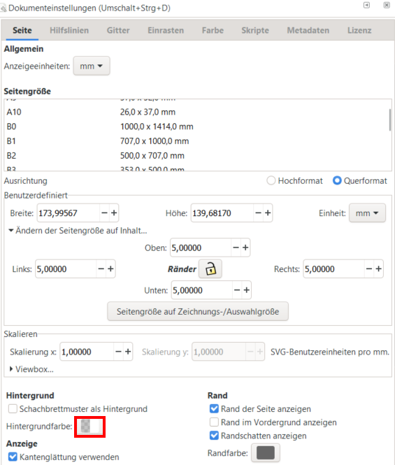

1.5. Vorbereitungen zum Export¶
1.5.1. Größe aller Objekte zusammen ändern¶
Falls Ihre Grafik doch größer geworden ist, als Sie wollten, so können Sie dies zum Schluss noch mal anpassen.
Hierbei gibt es jedoch einige Punkte zu beachten:
Bei der Skalierung alle Objekte selektieren, aber nie gruppieren!
Durch die Gruppierung über alle Ebenen werden alle Objekte zur aktivieren Ebene gezogen, die anderen Ebenen haben dann also keinen Inhalt mehr.
Wenn Sie wollen, dass sich die Konturbreite nicht mit skaliert wird, müssen Sie die Option der Konturskalierung (in der
Tool-Control-Bar) ausschalten

1.5.2. Seitengröße an Zeichnung anpassen¶
Markieren Sie alle Objekte die zum Bild gehören sollen und öffnen anschließend die Dokumenteneinstellung mit der Option Ändern der Seitegröße auf Inhalt ...
DOKUMENTENEINSTELLUNGEN
(SHIFT + STR + D) oder (Menu bar → Datei → Dokumenteneinstellungen...)
Reiter: Seite

Hier können Sie noch wenn gewünscht einen Rand eingeben und dann durch den Button Seitengröße auf Zeichnungs-/Auswahlgröße anpassen die Seitengröße neu einstellen. So würde dies dann z.B. mit dem Rändern von 5mm aussehen:
{kind=link}
Fig. 1.62 Zeichnung an Selektion anpassen¶
1.5.3. Hintergrundfarbe (für Export) einstellen¶
Um den Einfluss der Hintergrundfarbe und des Randes beim Export zu verdeutlichen, habe ich die Grafik in drei verschiedenen Varianten exportiert und auf einem Hintergrund mit Farbverlauf eingefügt.
MIT TRANSPARENTEM HINTERGRUND

Fig. 1.63 Die Verwendung eines transparenten Hintergrund kann beim einfügen auf einem farbigen Hintergrund unseren Trick bei der Sonne offenbaren¶
✅ kann z.B. in Powerpoint Präsentationen (bei Folien die nicht weiß sind) besser aussehen
❌ Unser Trick bei der Sonne funktioniert so nicht mehr (kann aber auch anders gelöst werden)
MIT WEISSEN HINTERGRUND OHNE RAND

Fig. 1.64 Verwendung eines weißen Hintergrundes ohne zusätzlichen Rand¶
Genau das Gegenteil zum vorherigen Beispiel. Es sieht bei nicht-weißem Hintergrund oft nicht schön aus, dafür fällt der Trick bei der Sonne nicht mehr auf
Zusätzlich fällt es auf, dass kein Rand verwendet wurde, wodurch der Text im Außenbereich nicht so schön lesbar ist
MIT WEISSEN HINTERGRUND MIT RAND

Fig. 1.65 Verwendung eines weißen Hintergrundes mit zusätzlichem Rand¶
durch den zusätzlichen Rand wirkt das Bild harmonischer und der Text ist nun auch besser lesbar
Grundsätzlich gibt es zwei Varianten einen Hintergrund für den Export einzustellen:
Einen Hintergrund als Objekt erstellen
Ebene “Hintergrund” erstellen und diese ganz unten einfügen.
Rechteck ziehen mit dem
Rechteck Toolund Farbe vergebenggf. kann snapping für die Seitenränder aktiviert werden damit genau die Größe des Seitenrandes verwendet werden kann
Hintergrundfarbe in
Seiteneinstellungen(Shift+Str+D)
```Wenn Sie das
Icon für den Hintergrund(siehe Bild oben) anklicken können sie mit dem Schieber A den Alpha-Wert (also die Transparenz ändern)A=100 (ohne Transparenz)
A=0 (voll Transparenz)
Standardwert ist
#ffffff00
{kind=link}
{kind=link}
1.5.4. [PixelGrafik] Export als png¶
PNG-BILD EXPORTIEREN
(SHIFT + STR + E) oder (Menu bar → Datei → PNG-Bild exportieren...)

Hierbei wichtige Einstellungen:
Exportbereich: Seite / Zeichnung / Auswahl wird exportiert
Bildgröße: Vorgabe von dpi (Seitengröße wird angepasst) oder Vorgabe von Breite bzw. Höhe (dpi wird angepasst)
Dateiname: Pfad mit Dateinamen angeben
Exportieren: Zum Speichern Exportieren drücken!
ToDo:
Speichern Sie ihre finale Grafik nun als .png (Pixelgrafik) ab
1.5.5. [VektorGrafik] Speichern als svg¶
DATEI SPEICHERN UNTER + Dateityp: Inkscape-SVG (*.svg)
(SHIFT + STR+ S) oder (Menu bar → Datei → Speichern Unter...)
Sie sollten die Datei immer als Inkscape-SVG (*.svg) speichern. Dies ist das native Inkscape Dateiformat in dem alle Eigenschaften (z.B. auch Ebenen) gespeichert werden können. Weiterhin können .svg manchmal auch Programmen direkt verwendet werden (z.B. in \(\LaTeX\)).
ToDo:
Falls Sie bisher ihre Zeichnung nicht als .svg (Vektor) gespeichert haben, sollten Sie dies spätestens jetzt tun um diese ggf. später noch weiter zu bearbeiten
1.5.6. [VektorGrafik] Speichern als pdf¶
Manchmal ist es auch sinnvoll die Datei als pdf zu speichern, dafür dann den Dateityp Portable Document Format (*.pdf) verwenden.
DATEI SPEICHERN UNTER + Dateityp: Portable Document Format (*.pdf)
(SHIFT + STR+ S) oder (Menu bar → Datei → Speichern Unter...)